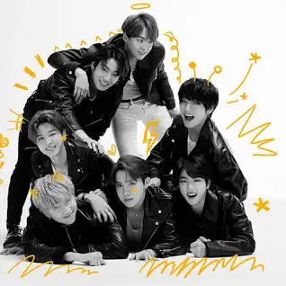

BTS
Beyond The Scene
BTS (en hangul, 방탄소년단; romanización revisada del coreano, Bangtan Sonyeondan; literalmente, «Bulletproof Boy Scouts»), también conocido como Bangtan Boys, es un grupo surcoreano formado en 2010. Está compuesto por siete integrantes: Jin, Suga, J-Hope, RM, Jimin, V y Jungkook. A pesar de haber sido creado con un estilo principalmente hip hop, ha llegado a incorporar una gran variedad de géneros en su repertorio musical.
BTS debutó en 2013 bajo la compañía Big Hit Entertainment con el álbum sencillo 2 Cool 4 Skool. Un año después publicó sus primeros álbumes de estudio en coreano y en japonés, Dark & Wild y Wake Up respectivamente. Su segundo álbum de estudio, Wings (2016), fue el primero de sus discos del que se vendieron más de un millón de copias en Corea del Sur.